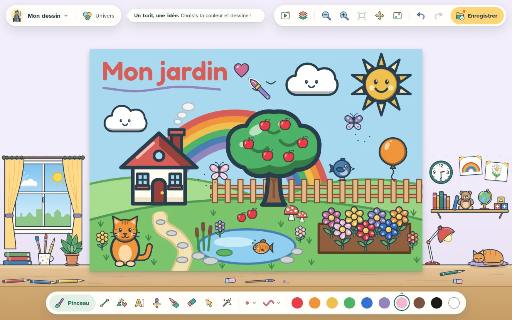

L’atelier de dessin des enfants.
Dessine, colorie et joue avec les tampons dans dix univers. Puis regarde le film de ton dessin, trait après trait.

Un coup de main ?
Où trouver l’aide dans Color ?
Ouvre Mon dessin, en haut à gauche, puis Aide. Tu y trouveras comment utiliser le pinceau, les formes, les tampons, le texte, la gomme, le pot de peinture et les pages à colorier.
Comment changer d’univers ?
Le bouton Univers change le décor de l’atelier. Double-clique sur un élément du décor pour entendre son nom.
Comment installer Color sur Windows ?
Le badge Microsoft Store télécharge le petit installateur de Color Atelier de Dessin pour Windows 10 et 11. Cette version est signée par Microsoft et se met à jour automatiquement.
Tu peux aussi télécharger la version à dézipper. Cette version portable n’est pas signée. Si Windows affiche « Windows a protégé votre ordinateur » au premier lancement, « Informations complémentaires » puis « Exécuter quand même » permettent de l’ouvrir.